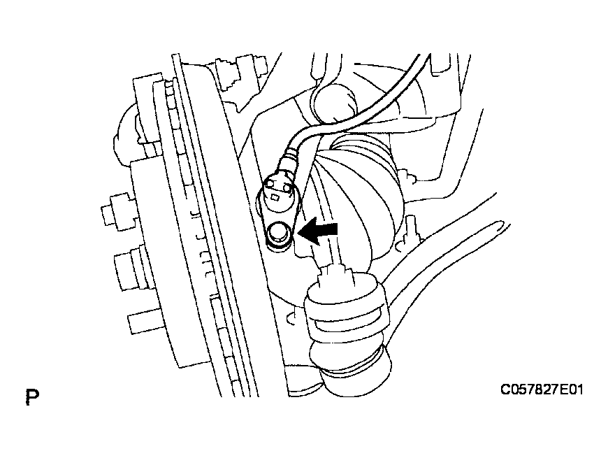
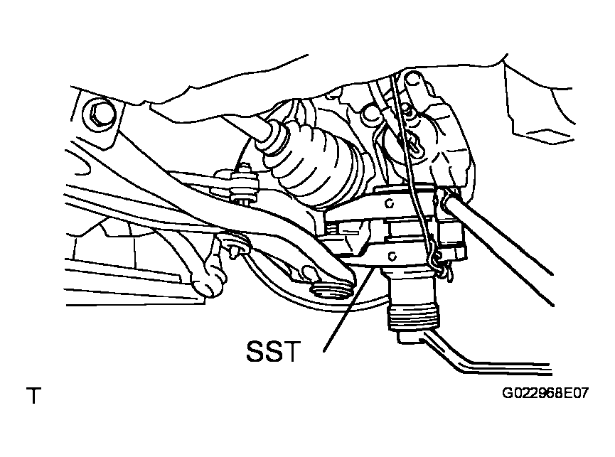
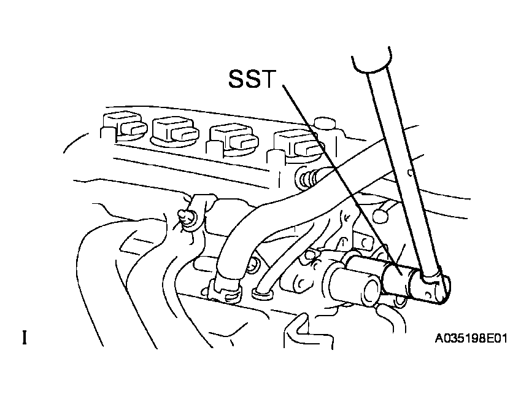

Engine Assembly: Removal
- DISCHARGE FUEL SYSTEM PRESSURE (See REMOVAL )
- DISCONNECT CABLE FROM NEGATIVE BATTERY TERMINAL CAUTION: Wait at least 90 seconds after disconnecting the cable from the negative (-) battery terminal to prevent airbag and seat belt pretensioner activation.
- REMOVE ENGINE UNDER COVER RH
- REMOVE ENGINE UNDER COVER LH
- DRAIN ENGINE COOLANT (See ON-VEHICLE INSPECTION )
- DISCONNECT RADIATOR HOSE INLET
- DISCONNECT RADIATOR HOSE OUTLET
- DISCONNECT OIL COOLER INLET HOSE (for Automatic Transaxle)
- DISCONNECT OIL COOLER OUTLET HOSE (for Automatic Transaxle)
- REMOVE RADIATOR GRILLE (See REMOVAL )
- REMOVE FRONT BUMPER COVER (See REMOVAL )
- DISCONNECT HOOD LOCK (See REMOVAL )
- REMOVE HOOD LOCK SUPPORT BRACE (See REMOVAL )
- REMOVE RADIATOR SUPPORT OPENING COVER (See REMOVAL )
- REMOVE UPPER RADIATOR SUPPORT (See REMOVAL )
- REMOVE RADIATOR (See REMOVAL )
- REMOVE FRONT WHEEL
- REMOVE NO. 2 CYLINDER HEAD COVER
- Remove the 4 nuts and No. 2 cylinder head cover.
- REMOVE BATTERY
- REMOVE AIR CLEANER (See REMOVAL )
- DISCONNECT FUEL TUBE (See REMOVAL )
- DISCONNECT ACCELERATOR CONTROL CABLE (See REMOVAL )
- DISCONNECT TRANSMISSION CONTROL CABLE (for Manual Transaxle) (See REMOVAL )
- DISCONNECT TRANSMISSION CONTROL CABLE (for Automatic Transaxle) (See REMOVAL )
- DISCONNECT CLUTCH RELEASE CYLINDER (for Manual Transaxle) (See REMOVAL )
- DISCONNECT UNION TO CHECK VALVE HOSE
- Disconnect the union to check valve hose for the brake booster.
- DISCONNECT HEATER WATER INLET HOSE
- Disconnect the heater water inlet hose from the air conditioner tube.
- DISCONNECT HEATER WATER OUTLET HOSE
- Disconnect the heater water outlet hose from the air conditioner tube.
- DISCONNECT ENGINE WIRE
- Remove the glove compartment door.
- Disconnect the engine wire harness from the ECM and junction block.
- Pull out the engine wire.
- Disconnect the engine wire from the engine room junction block.
- Remove the body ground.
- REMOVE GENERATOR V BELT (See REMOVAL )
- REMOVE COOLER COMPRESSOR (See REMOVAL )
- REMOVE FRONT FLOOR PANEL BRACE (See REMOVAL )
- REMOVE FRONT EXHAUST PIPE (See REMOVAL )
- DISCONNECT STEERING INTERMEDIATE SHAFT (See REMOVAL )
- REMOVE FRONT AXLE HUB LH NUT
- Remove the clip and nut.
- Using SST and a hammer, unstake the lock nut.
SST 09930-00010
NOTE:- When removing the nut, unstake the lock nut completely.
- Do not damage the threads of the drive shaft.
- Do not use SST with the tip sharpened.
- Set SST to the groove with the flat face facing upward.
- Using a 30 mm socket wrench, remove the lock nut.
HINT:
Perform the same procedure as above on the opposite side.
- DISCONNECT SPEED SENSOR FRONT LH (w/ABS)
- Remove the bolt and disconnect the speed sensor from the steering knuckle.

Courtesy of © TOYOTA, LICENSE AGREEMENT TMS1002HINT:
Perform the same procedure as above on the opposite side.
- Remove the bolt and disconnect the speed sensor from the steering knuckle.
- DISCONNECT TIE ROD END LH
- Using SST, disconnect the tie rod end from the steering knuckle.
SST 09628-62011
NOTE: Do not damage the dust cover of the ball joint.HINT:
Perform the same procedure as above on the opposite side.
- Using SST, disconnect the tie rod end from the steering knuckle.
- DISCONNECT FRONT SUSPENSION ARM LOWER LH
- Using SST, disconnect the front suspension arm lower from the steering knuckle.

Courtesy of © TOYOTA, LICENSE AGREEMENT TMS1002SST 09628-00011
HINT:
Perform the same procedure as above on the opposite side.
- Using SST, disconnect the front suspension arm lower from the steering knuckle.
- DISCONNECT FRONT DRIVE SHAFT LH
- Using a plastic-faced hammer, detach the drive shaft from the axle hub by tapping the drive shaft.
HINT:
Perform the same procedure as above on the opposite side.
- Using a plastic-faced hammer, detach the drive shaft from the axle hub by tapping the drive shaft.
- REMOVE ENGINE AND TRANSAXLE ASSEMBLY
- Set the engine lifter.
- Remove the bolt which is used to fix the liquid tube to the engine mounting insulator RH.
- Remove the 5 bolts, nut and engine mounting insulator RH.
- Remove the 2 bolts and detach the engine mounting bracket from the engine mounting insulator LH.
- Remove the engine together with the transaxle.
- Remove the 8 bolts shown in the illustration.
- Carefully remove the engine assembly from the vehicle.
- Install the 2 engine hangers as shown in the illustration.
Part No.
HANGER AND BOLT SPECIFICATIONItem Part No. 1 engine hanger 12281-21010 Bolt 91642-81025 Torque: 40 N*m (408 kgf*cm, 30 ft.*lbf)
- Attach the engine sling device and hang the engine with the chain block.
- REMOVE VANE PUMP V BELT (See REMOVAL )
- REMOVE VANE PUMP
- Disconnect the power steering oil pressure sensor harness.
- Remove the 2 bolts and vane pump assembly.
- REMOVE FRONT SUSPENSION CROSSMEMBER
- Remove the through bolt.
- Separate the engine and the transaxle assembly from the suspension crossmember.
- REMOVE STARTER (See REMOVAL )
- REMOVE GENERATOR (See REMOVAL )
- REMOVE MANUAL TRANSAXLE (for Manual Transaxle) (See REMOVAL )
- REMOVE AUTOMATIC TRANSAXLE (for Automatic Transaxle) (See REMOVAL )
- REMOVE CLUTCH COVER (for Manual Transaxle) (See REMOVAL )
- REMOVE CLUTCH DISC (for Manual Transaxle)
- REMOVE FLYWHEEL (for Manual Transaxle)
- Hold the crankshaft pulley with SST, and then remove the 6 bolts and flywheel.
SST 09213-58012 (91111-50845), 09330-00021
- Hold the crankshaft pulley with SST, and then remove the 6 bolts and flywheel.
- REMOVE DRIVE PLATE (for Automatic Transaxle)
- Hold the crankshaft pulley with SST, and then remove the 6 bolts and drive plate.
SST 09213-58012 (91111-50845), 09330-00021
- Hold the crankshaft pulley with SST, and then remove the 6 bolts and drive plate.
- REMOVE VENTILATION HOSE (See REMOVAL )
- REMOVE NO. 2 VENTILATION HOSE (See REMOVAL )
- REMOVE INTAKE MANIFOLD
- Using several steps, remove the 3 bolts and 2 nuts in the sequence shown in the illustration. Then remove the intake manifold.
- Remove the gasket from the intake manifold.
- REMOVE BOOSTER VACUUM TUBE
- Remove the 2 bolts and booster vacuum tube.
- REMOVE MANIFOLD SUPPORT BRACKET
- Remove the 3 bolts and manifold support bracket.
- REMOVE NO. 1 EXHAUST MANIFOLD HEAT INSULATOR
- Remove the 4 bolts and exhaust manifold heat insulator.
- REMOVE EXHAUST MANIFOLD
- Remove the 3 bolts, 2 nuts and exhaust manifold.
- REMOVE IGNITION COIL
- Remove the 4 bolts and pull out the 4 ignition coils.
- REMOVE NO. 1 WATER BYPASS PIPE
- Remove the 2 nuts and 2 bolts, and then remove the water bypass pipe.
- REMOVE ENGINE COOLANT TEMPERATURE SENSOR
- Using SST, remove the sensor.

Courtesy of © TOYOTA, LICENSE AGREEMENT TMS1002SST 09817-33190
- Using SST, remove the sensor.
- REMOVE KNOCK SENSOR
- Remove the bolt and sensor.
- REMOVE ENGINE OIL PRESSURE SWITCH
- Using SST, remove the switch.
SST 09268-46021
- Using SST, remove the switch.